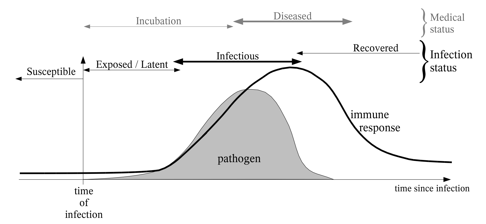
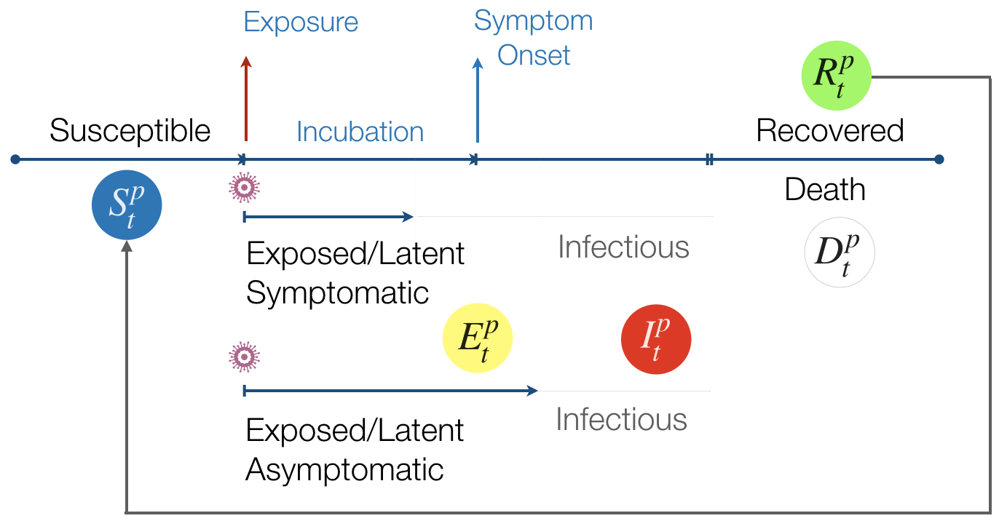

Research
My work integrates phylogenetic comparative methods and functional morphology to study macroevolutionary patterns in fishes. My dissertation takes advantage of new methodology, the largest vertebrate body shape dataset ever constructed, and classic biomechanical principles to explore the effects of transitions to biting feeding modes on the morphological diversity of reef fishes.
In recent work, with Chris Martinez and Peter Wainwright, I used landmark morphometrics to quantify cranial kinesis as a trajectory of skull shape change during the feeding strike, then used macroevolutionary models to estimate the evolutionary dynamics of feeding kinematics. We contrasted the evolutionary dynamics of feeding mechanics and morphology between fishes that exclusively capture prey with suction and multifunctional species that augment suction feeding with biting behaviors to remove attached benthic prey. We found evidence for reduced kinesis in fishes that rely on biting and that among suction feeders, prey type may affect evolution of skull mobility. Ultimately, we found that multifunctionality constrains rates of kinematic evolution in biters, but not the evolution of head shapes.
I have spent parts of two summers in the fish collections at the Smithsonian Institution with a joint team out of the Wainwright Lab (UC Davis) and the Price Lab (Clemson University) collecting body shape data on 6,000 species of teleost fishes through an NSF-funded project. This project has included a team of over 20 undergraduates, four senior personnel, and two faculty members, and over 16,000 specimens. Our first paper describing the dataset and our work with our undergraduate team was published in Integrative and Comparative Biology; we found that fish width is the primary axis of morphological evolution across teleosts! We also wrote a Best Practices paper about our experience mentoring a diverse team of undergraduate over a yearlong Course-based Undergraduate Research Experience--you can find it in Integrative Organismal Biology.
 Adam Summers, Alice Gibb, Stacy Farina, and I studied the effect of size on burial success in flatfishes. We wanted to know how their ability to bury in the sand changes as the fish grows, and we used high speed video and photography to quantify burial performance. Our results suggest that both body size and substrate grain size can potentially limit the ability of flatfishes to bury: a very large fish (>150 cm) may move too slowly to fluidize all but the smallest substrate particles and some particles are simply too large for smaller individuals to fluidize. This paper was published in Journal of Experimental Biology: read it here!
Adam Summers, Alice Gibb, Stacy Farina, and I studied the effect of size on burial success in flatfishes. We wanted to know how their ability to bury in the sand changes as the fish grows, and we used high speed video and photography to quantify burial performance. Our results suggest that both body size and substrate grain size can potentially limit the ability of flatfishes to bury: a very large fish (>150 cm) may move too slowly to fluidize all but the smallest substrate particles and some particles are simply too large for smaller individuals to fluidize. This paper was published in Journal of Experimental Biology: read it here!
 In my work on shark teeth, I explored structure, function, and evolution of shark teeth in two separate projects. At Cornell, Willy Bemis and I explored tooth morphology and development in sixgill and sevengill sharks. These sharks exhibit single-file tooth replacement, in which lost teeth are replaced without regard to the wear or loss status of adjacent tooth files. Their unique multicusped tooth morphology makes them a fascinating study system. In my work at Friday Harbor Labs, Adam Summers, Stacy Farina, Jeff Brash, and I designed and built a dynamic testing device to test shark tooth performance under loading conditions experienced by prey. We found that variation in tooth shape affected cutting ability of teeth, and that there is likely a tradeoff between sharpness and longevity in shark teeth. Our paper was published in Royal Society Open Science: check it out!
In my work on shark teeth, I explored structure, function, and evolution of shark teeth in two separate projects. At Cornell, Willy Bemis and I explored tooth morphology and development in sixgill and sevengill sharks. These sharks exhibit single-file tooth replacement, in which lost teeth are replaced without regard to the wear or loss status of adjacent tooth files. Their unique multicusped tooth morphology makes them a fascinating study system. In my work at Friday Harbor Labs, Adam Summers, Stacy Farina, Jeff Brash, and I designed and built a dynamic testing device to test shark tooth performance under loading conditions experienced by prey. We found that variation in tooth shape affected cutting ability of teeth, and that there is likely a tradeoff between sharpness and longevity in shark teeth. Our paper was published in Royal Society Open Science: check it out!